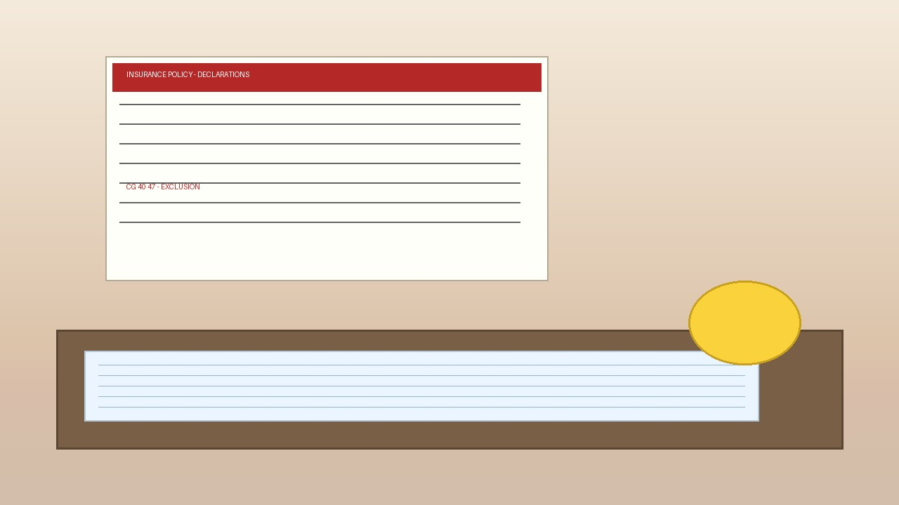

Your Builder Used AI to Design Your Addition. The Insurer Just Excluded It From Coverage.

Pull your contractor's declarations page and look for CG 40 47, a code that barely existed fourteen months ago and now sits on 2,369 active commercial general liability policies that contractors carry according to a nationwide review of state filings through July 31, 2026. The broadest version strips out bodily injury, property damage, and advertising injury for any claim arising from generative AI, which means a builder who used AI for a single takeoff on an otherwise conventional $600,000 custom home could see a later defect claim on that entire project fall within the exclusion because the trigger is connection to AI, not proportion of work touched.
Insurance Services Office published six standard generative AI exclusion forms in July 2025, carriers started filing them one month later, and monthly filings peaked at 413 in February before Trades Coverage counted 4,078 state-level records by late August 2026 across 49 states and DC, covering CGL, umbrella and excess, commercial package, businessowners, and E&O, with every state except Minnesota showing at least one record. If your contractor renewed after August 2025, your policy probably changed while you were focused on lumber lead times, and if you did not get a new endorsement packet, you may have missed the page that matters most.
The form your AIA contract never anticipated
Standard AIA A201-2017 was not written for generative design tools, automated takeoffs, or AI-driven safety monitoring, and Frantz Ward identified five gaps that now create real exposure: standard of care (what human review satisfies professional obligations when AI generated content is used), responsibility for design documents (liability still flows to human party with no distinction for tech-driven error), intellectual property (ownership and infringement risk when third-party AI platforms generate work), third-party technology risk (outputs difficult to verify and may change, unclear allocation between team and software provider), and insurance alignment (professional liability policies structured around human error, unclear if coverage applies to AI-related issues).
AIA makes the human party liable for AI-assisted work because the party relying on AI bears risk if AI produces inaccurate information, while your CGL says that same AI-assisted work is excluded, which leaves you sitting in the middle where contract says you own it and insurance says it does not cover it. For residential builders, the math is uncomfortable because typical custom builders carry $2 million general aggregate per project and $1 million per occurrence under A201 Section 11.1 baseline, average new home price was $495,000 in Census Q4 2025, and a $180,000 defect claim representing 30 percent of a $600,000 project is common in litigation, yet if CG 40 47 applies that $180,000 could be entirely uninsured.
Public builders paid $1.071 billion in warranty claims in 2024 across 27 builders, about $39.7 million per builder per year, and if even 5 percent involve AI-assisted estimating or design while 24 percent of contractors now use AI for cost estimating per ServiceTitan, roughly $53.5 million in potentially excluded claims exists nationally using public data alone, while the residential sector has 1.5 million housing starts, far more than 27 public builders track, so private builder exposure is materially larger.
Why carriers are moving now
Underwriters cite reliability data because Stanford HAI and Stanford Law research found general-purpose large language models hallucinate 58 to 88 percent of the time on legal queries, based on 200,000-plus queries across GPT-3.5, Llama 2, and PaLM 2, while specialized legal research tools using retrieval-augmented generation still hallucinate 17 to 33 percent despite marketing claims of hallucination-free citations, and a New York lawyer was sanctioned for citing ChatGPT-invented fictional cases in a brief after Chief Justice Roberts warned about hallucinations in his 2023 annual report.
Construction AI tools have no public hallucination benchmark, which is precisely the problem for actuaries trying to price unknown risk, because if a tool hallucinates a structural specification or a code-compliant egress window that is not actually compliant and a house fails inspection or worse, the claim touches AI and carriers do not want to subsidize that learning curve. Berkley's absolute AI exclusion shows how broad definitions can get when it bars claims based upon, arising out of, or attributable to any use, deployment, or development of artificial intelligence, plus statements about AI, alleged violation of AI laws, and any demand to investigate AI risks, while defining artificial intelligence as any machine-based system that for explicit or implicit objectives infers from input how to generate outputs such as predictions, content, recommendations, or decisions that can influence physical or virtual environments.
Read literally, Berkley's language could include machine assistance builders have used for years before generative AI exploded, which is why Hamilton Insurance Group's narrower but still sweeping definition matters: claims based upon, arising out of, or in any way involving generative artificial intelligence, defined to include ChatGPT, Bard, Midjourney, DALL-E. ISO's own language is more restrained but still optional for carriers to adopt, where CG 40 47 excludes Coverage A and B for bodily injury, property damage, or personal and advertising injury arising out of generative AI, CG 40 48 excludes Coverage B only for advertising injury, and CG 35 08 excludes Products and Completed Operations for bodily injury or property damage arising out of generative AI, the coverage a contractor relies on after a job closes according to Pillsbury's analysis of the ISO forms.
No admitted product fills the gap
When ISO excluded cyber risk from CGL in early 2000s, standalone cyber insurance emerged for businesses that wanted to buy coverage back, yet Trades Coverage found no admitted standalone product for contractors that replaces excluded AI exposure today, with 4,078 filings covering contractor lines and 2,369 already in force, and carriers introducing AI exclusions are following the same pattern used for silent cyber but the follow-on market for contractors does not yet exist because filing data covers admitted-market SERFF and Florida I-File records where non-admitted market activity is likely wider.
Large construction companies keep risk managers monitoring filings while at smaller contractors that job falls to the broker, and many brokers have not yet flagged this despite ServiceTitan's 2026 Commercial Specialty Contractor Industry Report surveying more than 1,000 commercial construction leaders and finding 38 percent now report measurable business impact from AI, up from 17 percent in 2025, with cost estimating and bid management most common at 24 and 22 percent. Residential adoption is lower, with ServiceTitan reporting 74 percent of residential contractors view AI as efficiency engine but only 25 percent using it with 48 percent seeing productivity gains, yet production builders are moving faster as D.R. Horton scanned 183,000 parcels with AI in 2025, which means if your land guy drove past 12 last week, your competitor's AI pre-qualified 3,000 high-potential sites while you were writing offers.
What to audit this week
Four questions for your broker will take about 20 minutes and will tell you whether your next claim is already uninsured, so ask them before renewal language hardens across the market. First, does my CGL have CG 40 47, CG 40 48, CG 35 08, or carrier-drafted equivalent listing generative artificial intelligence, ChatGPT, Midjourney, or DALL-E, and does the definition say generative AI only or any machine-based system that infers from input. Second, does my professional liability or E&O have Berkley absolute AI exclusion or Hamilton generative AI exclusion that bars claims based on use, deployment, or development of AI. Third, does my umbrella follow form on AI exclusion, meaning umbrella also excludes what CGL excludes, because many umbrellas do. Fourth, is there any admitted product to buy back coverage, where answer today is no because Trades Coverage found no admitted standalone product to replace excluded exposure.
Negotiate for narrower definition limited to generative AI only, not any machine-based system, ask for carve-back where human-reviewed AI output where licensed professional exercises independent judgment and retains final decision authority is not excluded, ask for prior acts coverage where work performed before exclusion was added remains covered, and ask for explicit exception where AI used solely for marketing, customer service, or administrative tasks, not design, estimating, or means and methods, does not trigger exclusion. Document human review because Frantz Ward standard of care requires independent judgment regardless of AI, keep logs that are not just AI output file alone, and show verification of who reviewed takeoff, when, what changed, what source was checked against, because that log is your best defense against both liability and coverage denial when carrier argues AI caused loss.
For homeowners hiring a builder, ask in writing whether builder uses AI tools for estimating, design, or scheduling and whether insurance excludes AI-related claims, then put in contract that builder warrants coverage for AI-assisted work or discloses exclusion and carries gap coverage if available, which costs nothing to ask but saves real money because one uncovered $50,000 defect claim costs 100 times more than a two-hour coverage review at $400 to $600 per hour for coverage counsel. Small builders should treat this like smart water: full smart water stack during construction costs $800 to $1,500 versus $4,000 to $7,000 retrofit, same logic applies here where reviewing policy during construction costs essentially zero while fixing an uninsured claim after drywall closes costs real money that comes straight from margin.
Strongest counterargument
The exclusion is reasonable because insurers are not anti-AI but are pricing unknown risk, and Stanford data showing 58 to 88 percent hallucination rates on general-purpose models and 17 to 33 percent even on specialized retrieval-augmented legal tools explains why caution makes sense for actuaries who have never priced generative design failure modes. If a builder uses ChatGPT to write a structural specification that hallucinates a load-bearing requirement and the house has a structural failure with bodily injury, should the CGL pool subsidize that risk when standard of care required human review, and would not the exclusion force builders to internalize AI risk and use human review which is what standard of care requires anyway, especially since CG 40 47 excludes only generative AI, not traditional ML that has been used for years for cost forecasting or supplier risk scoring, while Berkley's broad definition is the outlier rather than ISO's narrower one.
Builders who use AI for marketing copy or customer service are not triggering CG 40 47's bodily injury and property damage exclusion, though they might trigger CG 40 48's advertising injury exclusion which is less critical for residential defect claims that flow through Coverage A, and finally the market will solve this because when ISO excluded cyber from CGL, standalone cyber emerged within 3 to 5 years and same will happen for AI as large brokers like Arthur J. Gallagher, Marsh, and Axa XL are already working on affirmative AI coverage that will let builders buy an AI E&O rider in 2 to 3 years, making current gap transitional not permanent. This counterargument is strong because it reframes exclusion as risk hygiene not coverage grab and has historical precedent, and it correctly notes that narrow reading of ISO forms leaves many traditional AI uses still covered while encouraging documentation that improves build quality anyway.
Limitations
This analysis uses Trades Coverage admitted-market data from SERFF and Florida I-File through July 31, 2026, where non-admitted market activity is likely wider but not captured, so actual exclusion prevalence may be higher than 4,078 records, and ISO forms are optional endorsements where carriers may file carrier-drafted equivalents with different language, so we relied on ISO standard language and reported examples from Berkley and Hamilton but could not verify every carrier's exact wording because SERFF filings require state-by-state access. ServiceTitan survey covers commercial specialty contractors, not purely residential custom builders, so residential adoption may be lower than 38 percent and our exposure math may overstate for custom builder subset while understating for production builders using enterprise AI at scale like D.R. Horton's 183,000-parcel scan.
No court has ruled on enforceability of CG 40 47, CG 40 48, or CG 35 08 in construction context, so Pillsbury's illusory coverage doctrine argument is theoretical until litigated, though courts consistently hold that coverage grants are construed broadly while exclusions are interpreted narrowly and against the insurer and that if any claim in an action is potentially covered, insurer must defend entire action, principles that may preserve defense rights despite AI exclusion but offer no guarantee when carrier has broad Berkley-style language. Stanford hallucination studies test legal queries, not construction estimating queries, so error rates may not transfer directly to construction-specific AI tools like Togal.AI, Buildxact, STACK, or CostToBuild.net, and no public hallucination rate exists for construction-specific AI, which means we cannot claim construction AI hallucinates at legal-model rates and we explicitly state that limitation here.
We could not verify per-policy premium impact of removing exclusion because no admitted market pricing exists when no replacement product exists, and Business Insurance notes ISO exclusions took effect January 2026 with carrier adoption beginning but not universal, so prevalence is not uniform across states or carriers.
Methodology
Filing counts come from Insurance Business Mag reporting of Trades Coverage data: 4,078 records, 2,369 in force, peak February 2026 at 413 filings per month, 3,955 of 4,078 involve contractor lines, every state except Minnesota has at least one record, and we did not independently verify SERFF filings because we cite Trades Coverage as primary source and note its admitted-market limitation. Exposure math starts with 38 percent measurable impact times 24 percent cost estimating times 1.5 million housing starts equals 136,800 to 283,800 homes per year where AI touches estimating depending on residential versus commercial mix, and if even 2 percent result in claim, that is 2,736 to 5,676 claims potentially touching exclusion, while at $180,000 average defect claim, exposure equals $492 million to $1.02 billion theoretical maximum that is illustrative not predictive and should not be cited as expected loss.
Warranty math uses $1.071 billion across 27 public builders equals $39.7 million per builder per year, with five percent AI-involved equals $1.98 million per builder per year potentially excluded, though national extrapolation requires private builder data we do not have, so we present it as order-of-magnitude context. ISO form definitions come from Pillsbury JDSupra analysis of CG 40 47, CG 40 48, CG 35 08, carrier examples from Insurance Business Mag and Business Insurance, ServiceTitan adoption rates from GlobeNewswire March 30, 2026 press release, Frantz Ward five gaps from JDSupra May 2026 analysis, and Stanford rates from Stanford HAI studies and follow-on study: 58 to 88 percent general-purpose, 17 to 33 percent specialized RAG tools, 58 to 82 percent general chatbots on legal queries, 69 to 88 percent for specific legal queries. Cost examples use AIA A201-2017 Section 11.1 CGL limits $2 million aggregate per project baseline, custom home $600,000, defect claim $180,000 equals 30 percent of project value common in defect litigation, coverage counsel $400 to $600 per hour, smart water stack $800 to $1,500 versus $4,000 to $7,000 retrofit.
What this means if you build or buy
Building code does not care about your timeline, and your insurer does not care about your AI workflow, yet AI adoption among contractors more than doubled in one year from 17 to 38 percent reporting measurable impact while filings for AI exclusions went from zero in mid-2025 to 4,078 in 12 months with no admitted product letting you buy back coverage, which is asymmetry that actually matters when you are signing a fixed-price contract. For a residential builder doing 6 to 8 homes a year, one uncovered claim wipes out margin on two homes, and for a homeowner a builder who cannot tender a defect claim to insurance becomes a builder who cannot pay for rework without litigation that drags on for 14 to 18 months in California superior court.
Pull the declarations page before you sign the next change order, ask four questions that take 20 minutes, document human review in a log that survives project closeout, and put coverage warranty in the contract so homeowner knows whether AI-assisted work remains insured, because insane that this is not standard practice yet and it will be by next renewal when every broker packet includes CG 40 47 by default.